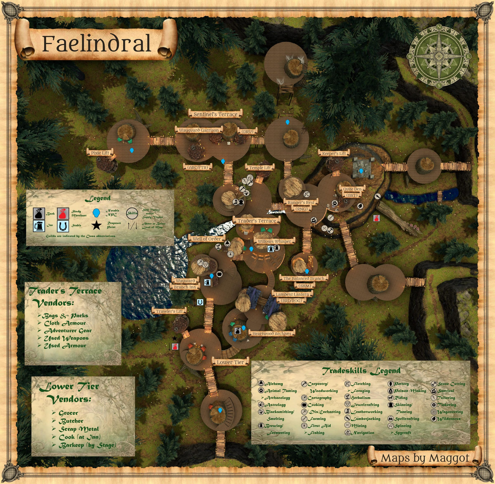
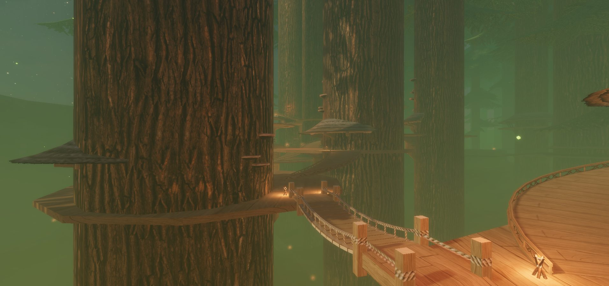

Faelindral
Faelindral is the Wood Elf home city located within the zone Evershade Weald.
Map


Named mobs
| Named | Lvl | Race / class | Where | Known loot (hover) |
|---|---|---|---|---|
| Example Item | - | - | ||
| Example Item | - | - |
Mobs & NPCs (camps by level)
Rows with a level are huntable camps; rows without are usually town NPCs or not yet documented.
| Name | Lvl | Race | Class | Where | Notes |
|---|---|---|---|---|---|
| A composer | - | Wood Elf | - | Above the Willows Whisper stage | Bard Song Vendor |
| Adventure Gear | - | Wood Elf | - | Merchant's Row | |
| Aerin Mossfang | - | Wood Elf | - | Kennel | Beastmaster Skill Trainer |
| Animal Taming Supplies | - | Halfling | - | Kennel | |
| Baewyn Mossfang | - | Wood Elf | - | Kennel | Beastmaster Skill Trainer |
| Bags and Packs | - | Wood Elf | - | Merchant's Row | |
| Beastmaster Spell Merchant | - | Wood Elf | - | Kennel | |
| Blacksmithing Supplies | - | Wood Elf | - | Merchant's Row | |
| Blacksmithing Trainer | - | Wood Elf | - | Merchant's Row | |
| Burch Windbreeze | - | Wood Elf | - | Ardent Keepers | |
| Captain Relgen Greenblade | - | Wood Elf | - | Ardent Keepers | |
| Carpentry Trainer | - | Wood Elf | - | Merchant's Row | |
| Cloth Armor | - | Wood Elf | - | Merchant's Row | |
| Fletching Supplies | - | Wood Elf | - | Ardent Keepers | |
| Fletching Trainer | - | Wood Elf | - | Ardent Keepers | |
| Listener Maplebloom | - | Wood Elf | - | - | Bard Starter Quest Mob |
| Lorinthal Skybranch | - | Wood Elf | - | - | Bard Starter Quest Mob |
| Lumberjacking Supplies | - | Wood Elf | - | East of Kennel Lift | |
| Lumberjacking Trainer | - | Wood Elf | - | East of Kennel Lift | |
| Moon Dances | - | Wood Elf | - | - | |
| Myrielle Softglade | - | Wood Elf | - | Merchant's Row | |
| Ranger Spell Merchant | - | Wood Elf | - | Ardent Keepers | |
| Sersil Tangleroot | - | Wood Elf | - | - | Bard Starter Quest Mob |
| Smelting Supplies | - | Wood Elf | - | Merchant's Row | |
| Smelting Trainer | - | Wood Elf | - | Merchant's Row | |
| Spinning Supplies | - | Wood Elf | - | Merchant's Row | |
| Spinning Trainer | - | Wood Elf | - | Merchant's Row | |
| Survival Supplies | - | Wood Elf | - | Ardent Keepers | |
| Survival Trainer | - | Wood Elf | - | Ardent Keepers | |
| Sylvarya Starveil | - | Wood Elf | - | Sentinel's Gaze | |
| Sylvosa Pineweld | - | Wood Elf | - | Merchant's Row | Bard Starter Quest Mob |
| Tailoring Supplies | - | Wood Elf | - | Merchant's Row | |
| Tailoring Trainer | - | Wood Elf | - | Merchant's Row | |
| Takalea Scaletender | - | Wood Elf | - | Tanner Building | |
| Tracking Supplies | - | Wood Elf | - | Ardent Keepers | |
| Tracking Trainer | - | Wood Elf | - | Ardent Keepers | |
| Used Armor Trader | - | Wood Elf | - | Merchant's Row | |
| Used Weapons Dealer | - | Wood Elf | - | Merchant's Row | |
| Woodworking Trainer | - | Wood Elf | - | Merchant's Row | |
| Wyrdguard Mithrilvine | - | Wood Elf | - | - | Bard Starter Quest Mob |
| Wyrdguard Oakenpine | - | Wood Elf | - | Sentinel's Gaze |
Quests
Gear that drops here
| Slot | Item | Key stats (wiki) | How to get | Lvl | Classes |
|---|---|---|---|---|---|
| Chest | Forest Scout Coat | AC 6, WIS +2, Mana +10 | Drop: Scout Leader Krindor (lvl unconfirmed) — Faelindral | any / ? | ARC BRD BST CLR DRU FTR INQ MNK PAL RNG ROG SHD SHM SPB |
Dangers
- fact Monster types (wiki): -.